EXPLORE MY WORK
Architects rely on weather files like EPW and TMY to test how buildings will perform, but these are built from long-term averages that miss urban heat island effects. Research shows this can shift energy load estimates by up to 40%.
Weather Where It Matters is an interactive computational design tool that predicts microclimate conditions for any user-selected location, including sites lacking historical weather records. Built in collaboration with Arup.
The tool runs the SUEWS urban climate model at surrounding weather stations to generate physics-based datasets, which are combined with historical data and passed through four regression models to predict temperature and humidity at the chosen site. Predictions were validated using Leave-One-Station-Out testing across seven Auckland stations. Delivered through a web interface designed for non-technical AEC users.
Design fields/skills
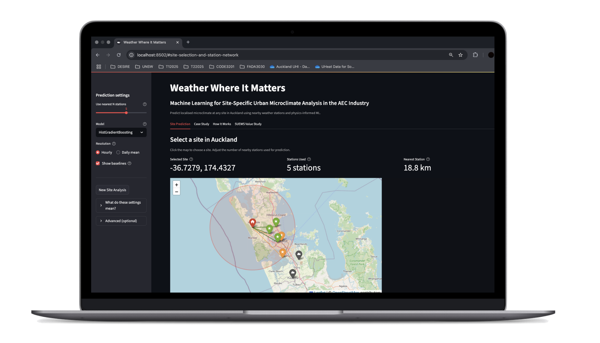
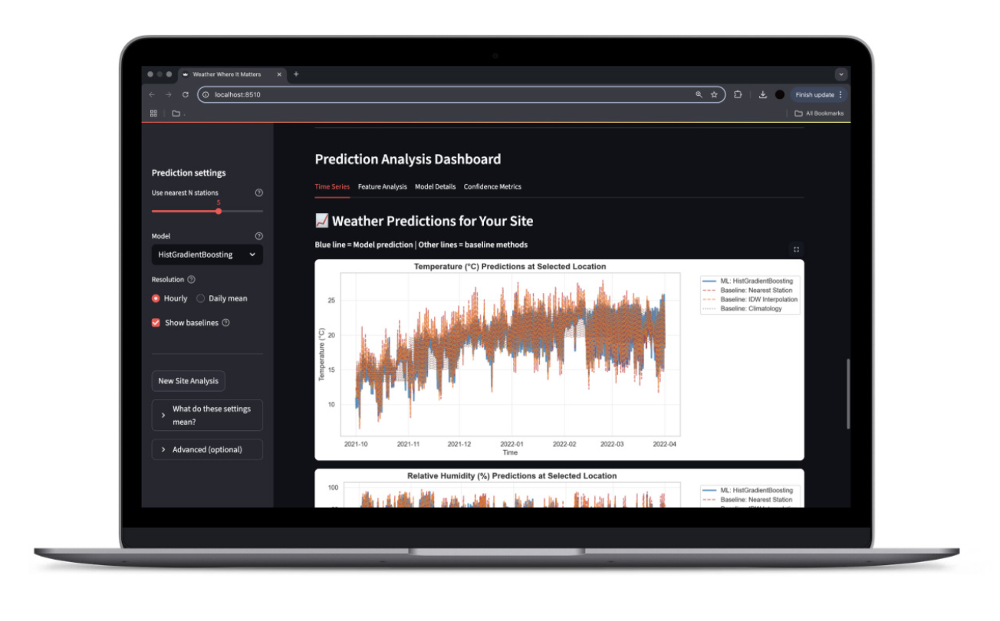
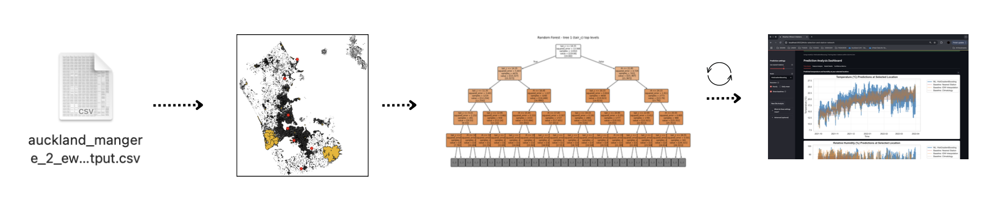
Workflow: Meteorological and GIS data from multiple weather stations were processed and used to run the Surface Urban Energy and Water Balance Scheme (SUEWS) model, generating physics-informed urban climate outputs. These outputs were combined with historical weather data to build a machine learning dataset. Several regression models were tested using Leave-One-Station-Out validation to evaluate prediction accuracy for unseen locations. The workflow was then deployed as an interactive web interface allowing users to select sites, view prediction results, and download climate data.
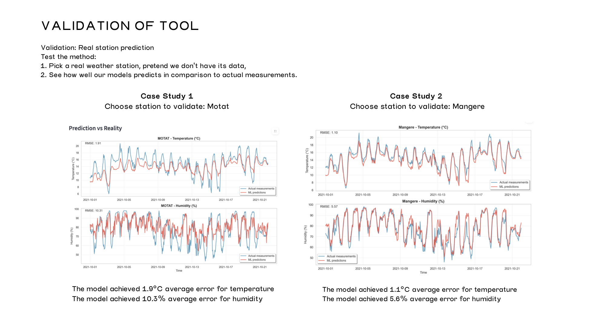
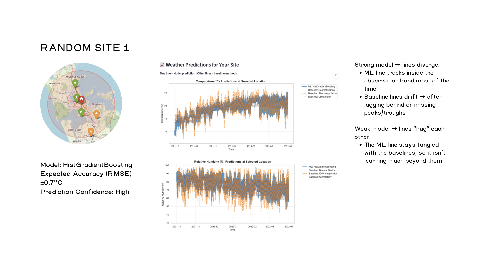
I built a planning analysis tool that evaluates uploaded 3D building models against LGA zoning and parcel data to flag compliance issues and assess site suitability.
The core design decision was keeping the LLM's role narrow: it doesn't read raw files. A Python backend first pre-processes uploaded STL geometry and zoning datasets into structured context before the prompt is sent.
Workflow: Flask handles STL uploads, Three.js extracts the geometry, and a structured prompt embeds the processed data before calling the OpenAI API, returning feedback across four categories: contextual compatibility, environmental analysis, zoning compliance, and alternative location suggestions.
Design fields/skills
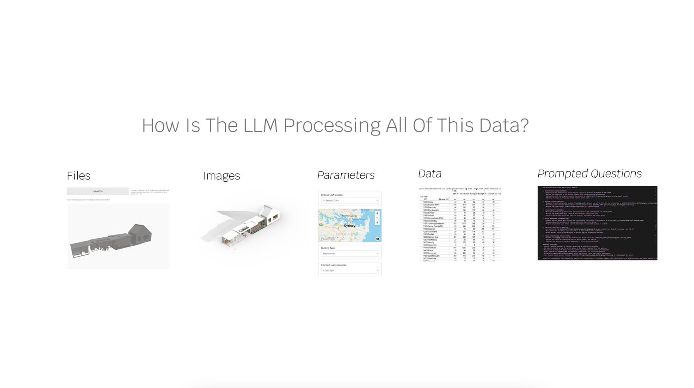
The LLM does not read raw design files independently. Python backend workflows first process uploaded STL models, reference images, user parameters, and LGA zoning datasets into structured architectural context. That processed data is then embedded into a carefully engineered prompt and sent through the OpenAI API, allowing the model to return planning feedback in four categories: contextual compatibility, environmental/material analysis, zoning compliance, and alternative location suggestions.
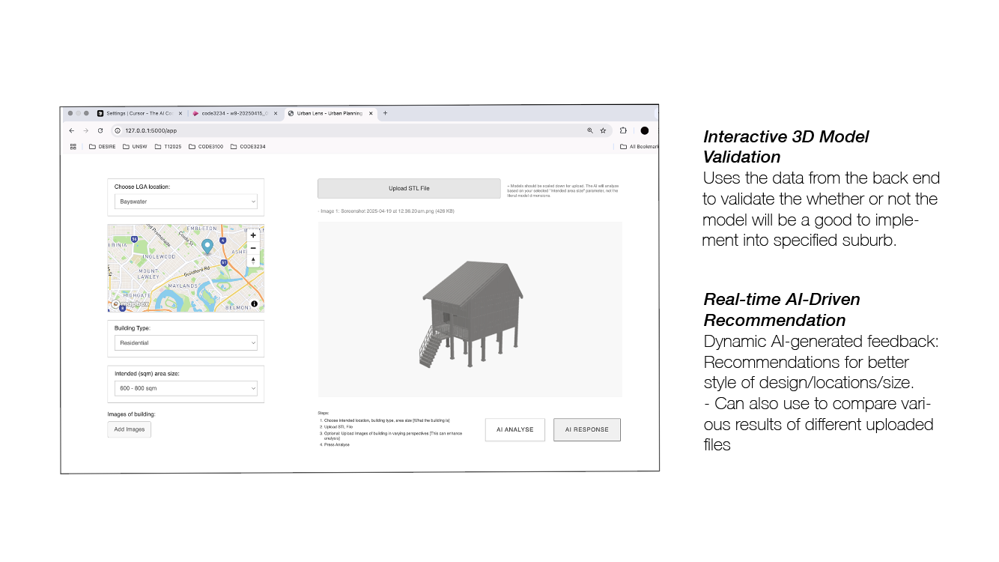
I used a UR5 robot arm to carve physics-generated patterns into ceramic vessels. The Grasshopper toolpath is the design decision here, not just a means of execution.
The carving patterns came from three methods: Kangaroo physics simulation, curve repulsion, and magnetic field lines. Each was mapped from a flat 2D plane onto a cylinder surface and translated into UR5 instructions. Reaching a clean result took three physical prototypes, adjusting clay moisture, feed rate, and tool depth with each iteration before the final magnetic-fields pass produced the resolved vessel.
Design fields/skills
Goat Island Redevelopment reimagines the harbour island as an accessible retreat for elder visitors, centred on a waterfront transportation terminal and residential units. As part of a team, I worked on the Revit model and the full construction documentation set: site plan, floor plans, elevations and sections with grids, levels and coordinated sheets: then took coordination further by running clash detection across the federated house and community-centre models in Autodesk Construction Cloud, identifying and logging wall, floor and panel clashes against the wharf for resolution.
Design fields/skills
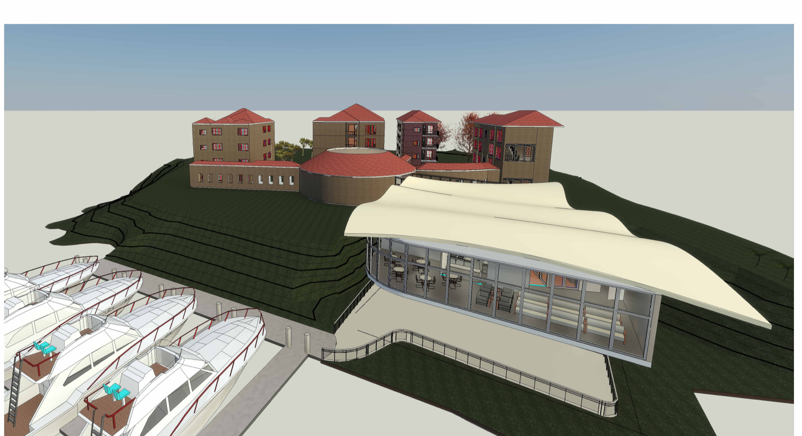
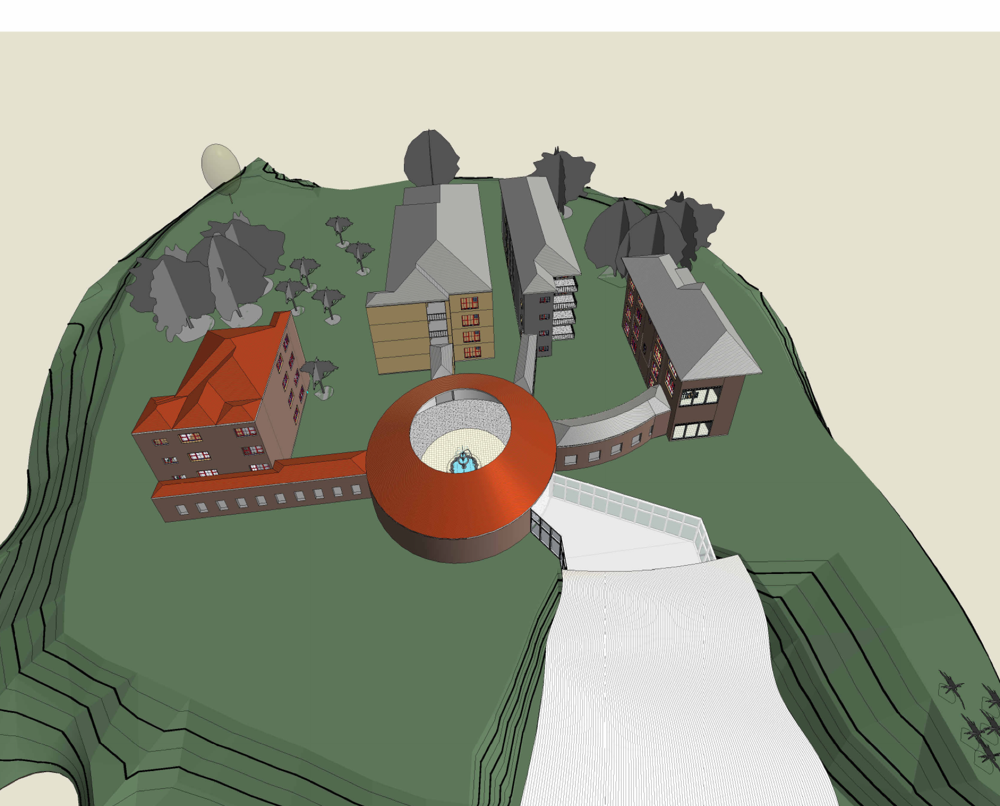
Construction documentation set produced from the Revit model: site plan, floor plan, elevations and sections, drawn with shared grids and levels across coordinated A1 sheets.
Federated-model clash detection in Autodesk Construction Cloud, coordinating the house model against the community-centre model.
I wrote custom Python and Grasshopper scripts that generate 3D printing toolpaths from scratch, controlling feed rate, extrusion volume, layer height, and curvature directly in code rather than through standard slicer software.
I built two prototype families through iterative G-code testing, using failed prints as direct feedback on parameter decisions. The work scaled up to a group project: a large façade panel fabricated on a KR70 industrial robot using 100% recycled plastic, where deliberate overhang geometry in the toolpath creates shifting shadow patterns when the panel is lit.
Design fields/skills
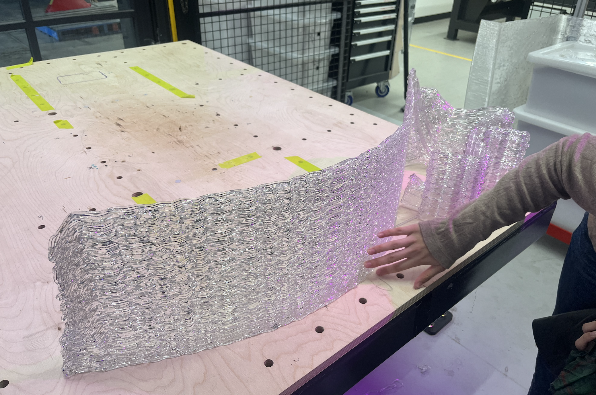
For Assignment 2, our group investigated light filtration as a façade design domain. By deliberately scripting controlled overhangs into the toolpath, the printed panel produced shifting shadow geometries when intersected with light, making light itself part of the architectural output. Fabricated on a KR70 industrial robot using 100% recycled plastic.
I built a computer vision tool that identifies building materials from a façade photo and returns the coverage percentage of each (concrete, brick, wood, glass, and vegetation) for fast material audits and sustainability assessments without a site visit.
I trained a YOLOv11 instance segmentation model using Roboflow across multiple annotation rounds, finding that annotation quality mattered more than dataset size. The final model reached 98.2% mAP and 97.4% precision.
Workflow: An uploaded image is sent to the Roboflow API via a Flask backend, which returns per-material detections and coverage percentages alongside an annotated output image.
Design fields/skills
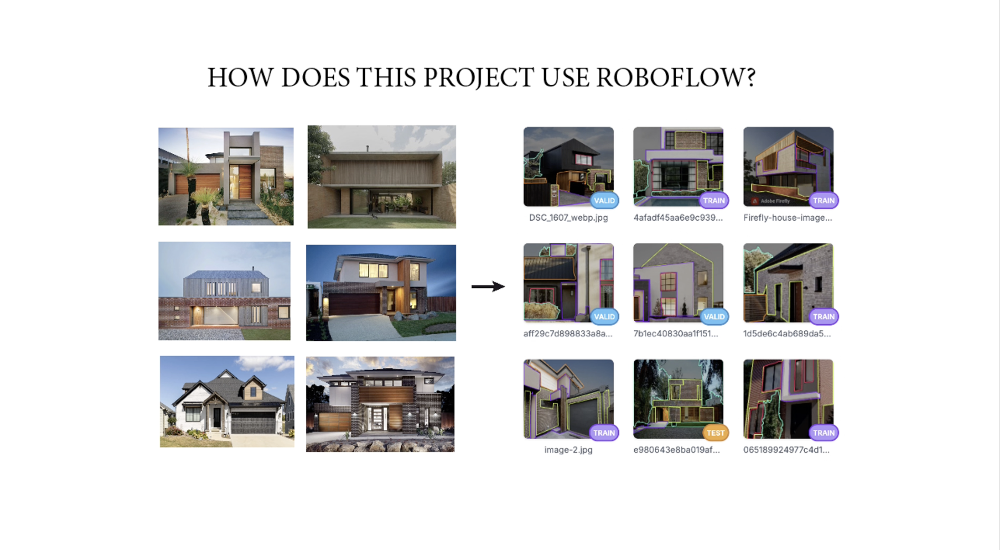
Iterative testing with YOLOv11 instance segmentation model revealed that annotation quality outweighed dataset size, the final model reached 98.2% mAP. Each trained model generates a unique ID plugged directly into the Flask backend, which calls the Roboflow API to run inference and return material detections and space coverage percentages.

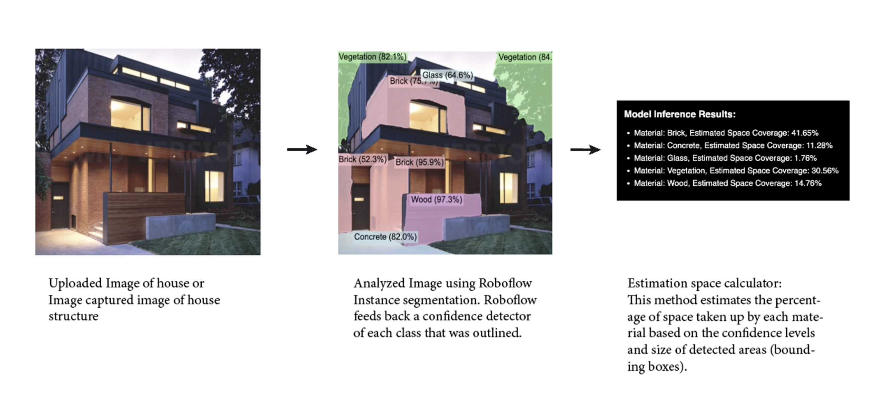
I built a parametric urban design tool that connects a web interface, Grasshopper, and a Three.js viewer. Changes to any parameter on the site regenerate the 3D model in real time against live city data.
The tool pulls road and land-use geometry live from OpenStreetMap into Grasshopper, which generates building envelopes, population density analysis, transport routes, and green space distribution for any Sydney block.
Workflow: Parameter changes post from the browser to a local server, trigger a Grasshopper recompute against the current OSM dataset, and push updated meshes to the Three.js viewer.
Design fields/skills
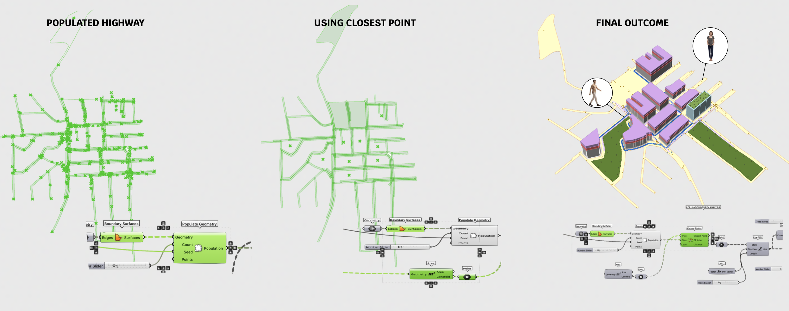
Population Density Analysis: Highway boundary geometry from OpenStreetMap is populated with points in Grasshopper, then a closest point component calculates proximity to the most user-heavy building centres to simulate where population movement concentrates. The seed point controlled on the website simultaneously drives building inclination and population density; so taller or denser building clusters attract higher population, gradually dispersing toward smaller blocks. This analysis directly informed where rooftop greenery and amenity buildings were placed, prioritising less populated zones for green space.
I designed and fabricated a geodesic grid shell using physics simulation for form-finding and structural analysis, validating every member before cutting a single piece.
I used Kangaroo to derive the catenary shell form, the shape a hanging chain makes, which transfers load in pure compression. I then ran Karamba3D load tests across four conditions (gravity, snow, wind, and combined loads) to size the cross-sections and confirm utilization before generating the geometry for laser cutting and hand assembly.
Design fields/skills